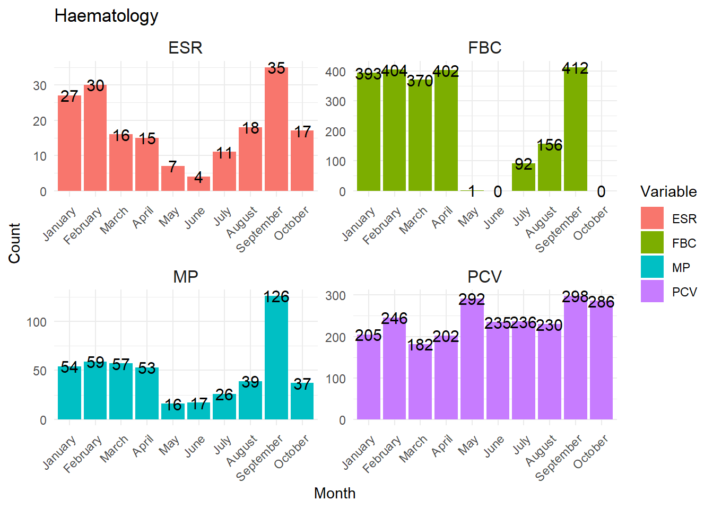

# Load the necessary libraries
library(ggplot2)
library(tidyr)
library(dplyr)
Attaching package: 'dplyr'The following objects are masked from 'package:stats':
filter, lagThe following objects are masked from 'package:base':
intersect, setdiff, setequal, union# Create the dataframe
haematology <- data.frame(
Month = c("January", "February", "March", "April", "May", "June", "July", "August", "September", "October"),
PCV = c(205, 246, 182, 202, 292, 235, 236, 230, 298, 286),
ESR = c(27, 30, 16, 15, 7, 4, 11, 18, 35, 17),
FBC = c(393, 404, 370, 402, 1, 0, 92, 156, 412, 0),
MP = c(54, 59, 57, 53, 16, 17, 26, 39, 126, 37)
)
# Ensure the months are ordered from January to December
haematology$Month <- factor(haematology$Month, levels = c("January", "February", "March", "April", "May", "June", "July", "August", "September", "October"))
# Reshape the haematology to long format
haematology_long <- pivot_longer(haematology, cols = c(PCV, ESR, FBC, MP), names_to = "Variable", values_to = "Value")
# Create the faceted bar plot
ggplot(haematology_long, aes(x = Month, y = Value, fill = Variable)) +
geom_bar(stat = "identity", position = "dodge") +
facet_wrap(~Variable, scales = "free") + # Allow both axes to vary independently
theme_minimal() +
labs(
title = "Haematology",
x = "Month",
y = "Count"
) +
theme(
axis.text.x = element_text(angle = 45, hjust = 1),
strip.text = element_text(size = 12)
) +
scale_x_discrete(drop = FALSE) +
geom_text(aes(label = Value),
vjust = 0.5, size = 4,
position = position_dodge(width = 0.8)
) # Centering the text on bars